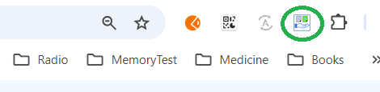

Thank You for Installing Our Extension!
We're thrilled to have you on board. To get started with using the extension, follow the simple steps below to pin it to your Chrome toolbar and start using it right away.
Step 1: Open the Extensions Menu
In the top-right corner of your Chrome browser, you’ll see a puzzle piece icon ( ). Click it to open the Extensions menu.
). Click it to open the Extensions menu.
Step 2: Pin the Extension
Once the Extensions menu is open, find our extension in the list. Click the pin icon 📌 next to it to pin it to your toolbar.
Step 3: Start Using the Extension
Now that the extension is pinned, you can see it in the Chrome toolbar. Click the icon to open the extension and start using it!
